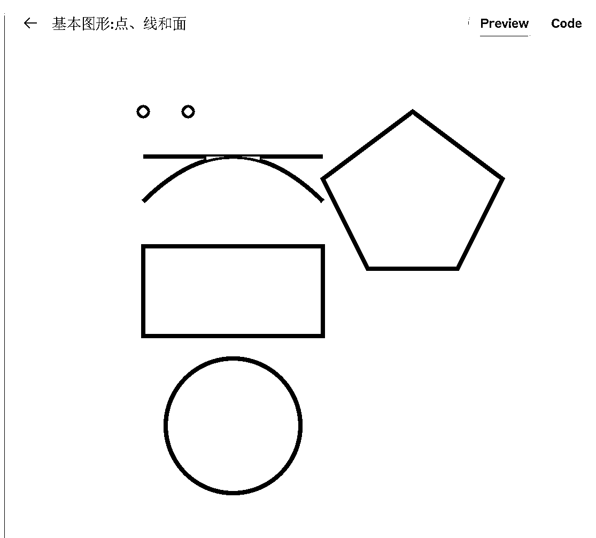
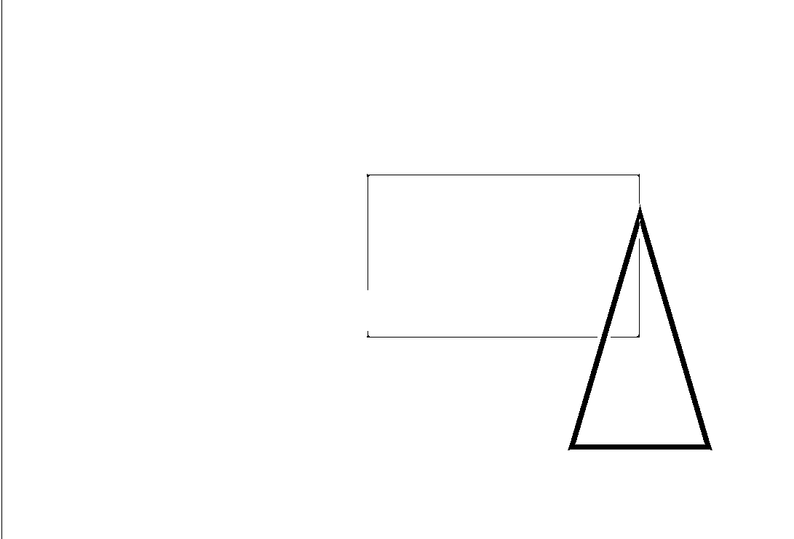
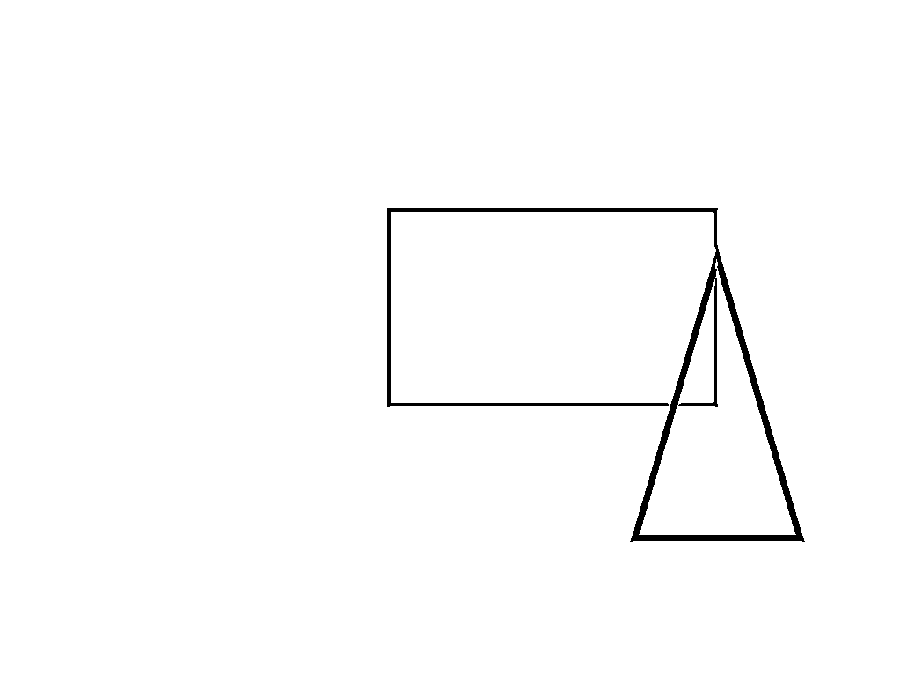
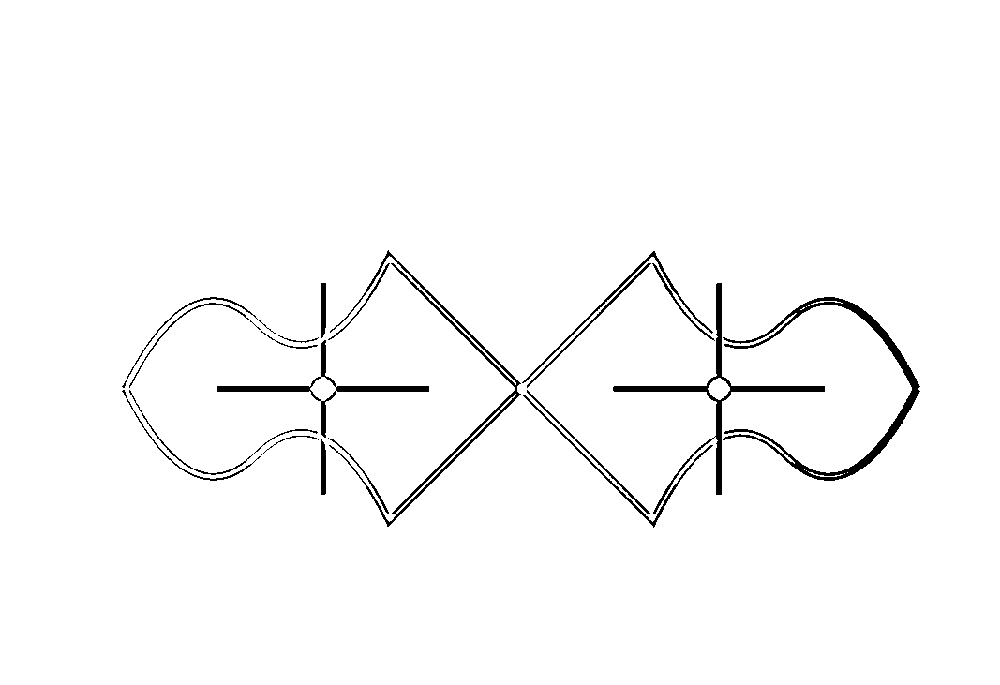
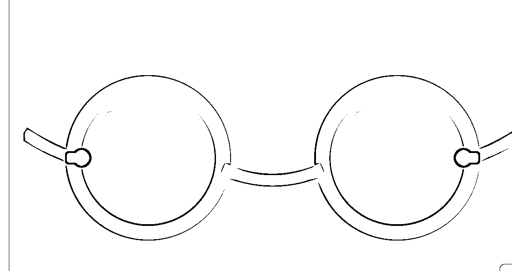

来源：https://lv9qj6hfr4z.feishu.cn/docx/CcfWdaFxbo2SNxxMZOtcbCXMnMC
在写作变现的这几年中，一直有一个问题困扰着我，就是数据可视化和做图表以及海报这些商单，很多情况下我都无法独立解决，必须求助外援。之前没有Claude的日子里，我都是苦哈哈的用wps流程图一个一个画图，用Excel输入数据一个一个制作统计图 扇形图等等。当我第一次接触Claude时，瞬间被它的强大图像创作能力所吸引。起初我以为使用Claude进行绘图会很复杂，但事实却出乎意料，只需要简单的文字描述，我就能轻松生成各种图形，无论是基础的几何形状，还是复杂的商业图表，Claude都能帮助我们实现。
经过我一周的研究琢磨写出了本篇教程，我希望通过这篇教程，帮助更多像我一样的初学者快速掌握Claude的基本操作，探索它丰富的创作功能。无论你是为日常工作制作图表，还是为创意项目设计视觉效果，Claude都可以成为你的得力助手。
Claude是由Anthropic公司开发的先进人工智能语言模型，代表了自然语言处理领域的尖端技术。作为大型语言模型（LLM）家族的杰出成员，Claude展现出卓越的语言理解和生成能力，能够处理各种复杂的语言任务。
Claude的核心优势包括:
我们通过提示词，准确无误的告诉CLAUDE我们想要生成的图形，可以生成SVG（可缩放矢量图形）代码，这些代码可以被浏览器或其他支持SVG的软件渲染成图像，只要我们的提示词指令准确 ，持续优化，明确细节，它会尽最大可能帮助我们完成图形的创作。
Claude的图像创作能力
图像分析与描述
视觉数据解释
SVG代码生成
图像创作指导
视觉问答
辅助设计
提示词：画 ，直线、曲线与基本形状
自动生成代码：
得到结果图形如下：

我们可以尝试更加详细的提示词：比如画一个黄色的圆形 旁边有一个黑色边框的三角形 还有一个长方形 透明度为0.3
代码：
得到结果图


我们可以继续调整长方形的透明度，由0.3调整到0.7
代码：
得到结果图，与之前的图片对比，确实颜色更深了 透明度更高了 。
组合图形花朵的设计
提示词：
创建了一个组合图形,展示了一朵花和一只蝴蝶。解释这个设计:
颜色选择:
代码：
得到结果图：


变形代码：
提示词：
整体布局：
每个复杂图形包含以下元素：
色彩设计：
对称性：
复杂性：
代码：
得到结果图

提示词：
我创建了一副时尚眼镜的SVG图形。以下是设计的详细说明：
得到代码：
增加深度与细节提示词：


增加深度与质感
提示词：
我对眼镜设计进行了以下改进，以增加深度感和质感：
这些修改大大增强了眼镜的视觉效果：
代码：
提示词：
SVG图形展示了网格、参考线与吸附的概念。
这个设计展示了这些概念如何在设计软件中工作：
代码：
得到结果图：

我创建了一个逼真的荷包蛋SVG图像。
提示词：
这个设计成功地捕捉了荷包蛋的关键特征：
代码：
fill="url(#eggWhiteGradient)" stroke="#e0e0e0" stroke-width="2" filter="url(#eggBlur)" /> fill="url(#yolkGradient)" stroke="#ffa500" stroke-width="2" /> fill="white" opacity="0.5" transform="rotate(-30 90 90)" /> 使用重复的元素，提示词与代码如下： 新设计展示了如何高效地重复使用荷包蛋元素来创建一个有趣的图案。 代码： fill="url(#eggWhiteGradient)" stroke="#e0e0e0" stroke-width="1" filter="url(#eggBlur)" /> fill="url(#yolkGradient)" stroke="#ffa500" stroke-width="1" /> fill="white" opacity="0.5" transform="rotate(-30 60 45)" /> 动画效果的荷包蛋 提示词： 这个新设计为荷包蛋添加了简单的动画效果，模拟它们在煎锅中的样子。 以下是动画效果的详细说明： 这些动画效果共同创造了一个生动的场景： 代码： fill="url(#eggWhiteGradient)" stroke="#e0e0e0" stroke-width="1" filter="url(#eggBlur)"> dur="3s" repeatCount="indefinite" values="M5,50 Q5,30 35,20 Q65,10 95,20 Q125,30 125,50 Q125,70 95,80 Q65,90 35,80 Q5,70 5,50 Z; M5,50 Q5,35 40,25 Q70,15 100,25 Q130,35 125,50 Q120,65 90,75 Q60,85 30,75 Q5,65 5,50 Z; M5,50 Q5,30 35,20 Q65,10 95,20 Q125,30 125,50 Q125,70 95,80 Q65,90 35,80 Q5,70 5,50 Z" /> fill="url(#yolkGradient)" stroke="#ffa500" stroke-width="1"> dur="2s" repeatCount="indefinite" values="50;48;52;50" /> fill="white" opacity="0.5" transform="rotate(-30 60 45)"> dur="4s" repeatCount="indefinite" values="0.5;0.7;0.3;0.5" /> type="translate" dur="6s" repeatCount="indefinite" values="0,0; 2,-2; -2,2; 0,0"/> dur="2s" repeatCount="indefinite" values="3;5;3" /> dur="3s" repeatCount="indefinite" values="2;4;2" /> dur="2.5s" repeatCount="indefinite" values="4;6;4" /> 动态结果展示： 比如我们在做数据可视化的过程中，我们收集到了一些数据，但是平时用Excel一条一条输入数据再制作图表太麻烦了，因此 我们可以使用Claude 来快速根据数据生成条形图与柱状图。 我提供的数据： 泽鑫电力科技公司2020年-2022年主要经营指标表单位：万元 把数据输入克劳德，命令克劳德根据数据生成条形图与柱状图，每个年份都有三个条形,分别代表这三个指标。从图中可以看出:资产总额(蓝色)在这三年中保持相对稳定,略有增长。负债总额(橙色)呈现逐年下降的趋势。营业收入(红色)有显著增长,特别是在2022年有大幅提升。 代码： .small { font: bold 12px sans-serif; } .heavy { font: bold 16px sans-serif; } 得到结果： 还是用泽鑫电力科技公司2020年-2022年主要经营指标数据来做折线图，步骤一样，投喂数据，提出要求 ，做折线图。这个折线图展示了泽鑫电力科技公司2020-2022年间五个主要财务指标的变化趋势。每条线代表一个指标，不同的颜色区分不同的指标。从图中我们可以观察到以下趋势： 代码： .small { font: bold 12px sans-serif; } .heavy { font: bold 16px sans-serif; } 得到结果图 对武侯祠新媒体用户利益满足度的评价： 非常同意（5分）：30人（35%） 比较同意（4分）：19人（22%） 一般（3分）：7人（8%） 比较不同意（2分）：8人（10%） 非常不同意（1分）：21人（25%） 提示词与代码： 这个饼图应该可以完整显示了，包括标题和所有的图例。这个图表展示了对武侯祠新媒体用户利益满足度的评价分布： .small { font: bold 12px sans-serif; } .heavy { font: bold 16px sans-serif; } 得到结果图形： 提示词： 甘特图展示了一个典型项目的进度情况。让我为您解释一下图表的各个部分： 从这个甘特图中，我们可以看出： 代码： .small { font: bold 12px sans-serif; } .heavy { font: bold 16px sans-serif; } .task { fill: #4a90e2; } .milestone { fill: #e74c3c; } 得到结果图： 客户服务流程图 提示词： 流程说明： 代码： .small { font: bold 12px sans-serif; } .medium { font: bold 14px sans-serif; } .heavy { font: bold 16px sans-serif; } .box { fill: #4a90e2; stroke: #2171cd; stroke-width: 2; } .diamond { fill: #f39c12; stroke: #d35400; stroke-width: 2; } .oval { fill: #2ecc71; stroke: #27ae60; stroke-width: 2; } .text { fill: white; } .arrow { fill: none; stroke: #34495e; stroke-width: 2; } refX="0" refY="3.5" orient="auto"> 得到结果图： 比如我们有一篇文章的大纲，我们需要整理为思维导图 。 后疫情时代商业银行会计运营工作风险与对策 大纲 （一）研究背景 （二）研究意义 1.理论意义 2.实际意义 （三）研究内容 （四）研究方法 1.文献法 2.案例法 二、相关概念及理论基础 （一）后疫情时代 （二）商业银行 （三）会计运营工作 三、后疫情时代商业银行会计运营工作面临的风险 （一）内部欺诈风险 1.员工道德风险 2.职权滥用问题 （二）数据安全风险 1.黑客攻击与系统入侵 2.内部人员操作失误 （三）合规性风险 1.法规遵守挑战 2.数据保护与隐私问题 四、商业银行会计运营工作中的风险对策 （一）增强内部控制 1.强化员工道德和合规培训 2.建立严格的职权审查和监控系统 （二）提高数据安全性 1.采用先进的加密技术 2.增加内部审计和操作审查 （三）加强合规性管理 1.定期进行法规培训 2.实施全面的数据保护策略 五、结论与展望 提示词与代码 以下是对思维导图的解释： .small { font: bold 10px sans-serif; } .medium { font: bold 12px sans-serif; } .large { font: bold 14px sans-serif; } .box { fill: #f0f0f0; stroke: #333; stroke-width: 1; } .line { stroke: #666; stroke-width: 1; } text { fill: #333; } 得到结果图： 以阿里为例，网上搜索阿里组织架构信息如下： 阿里巴巴公司的组织架构 阿里巴巴的组织架构分为总部和多个分支机构。总部设立在杭州，下设有多个部门和职能团队，包括市场部、财务部、研发部、人力资源部等。其中，市场部负责企业市场营销策略的制定和实施，财务部负责企业财务管理和会计核算工作，研发部负责产品研发和技术支持，人力资源部负责员工招聘、培训、绩效评估等人力资源管理工作。 除总部外，阿里巴巴还在全国各地设立了多个分支机构，分别负责当地市场的开发和维护工作。每个分支机构也设置了相应的部门和职能团队，以支持当地业务的顺利开展。同时，总部和分支机构之间也建立了紧密的协作机制，确保整个企业的战略和运营目标的统一性和协调性。整个企业的组织架构设计合理、职责明确、层次分明，能够有效提高企业运营效率和管理水平。 提示词阐述与代码： 杭州总部： 层级结构： 总部部门： 分公司： 分公司内部结构： .box { fill: #f0f0f0; stroke: #333; stroke-width: 2; } .text { font-family: Arial, sans-serif; font-size: 14px; fill: #333; } .line { stroke: #666; stroke-width: 1; } .highlight { fill: #4a90e2; } 得到结果图： 鱼骨图是一种非常有效的工具，用于分析问题的根本原因。让我们以一个常见的商业问题为例：「销售下降」，来创建一个鱼骨图。 提示词与代码 这个鱼骨图的优点包括： .title { font: bold 16px sans-serif; } .category { font: bold 14px sans-serif; } .item { font: 12px sans-serif; } .line { stroke: #333; stroke-width: 2; } .subline { stroke: #666; stroke-width: 1; } 得到结果图： 我们假设这是一家零售公司过去6个月的销售数据。这些数据包括每月的销售额、客户数量、平均订单价值和利润率。 月份,销售额 (万元),客户数量,平均订单价值 (元),利润率 (%) 1月,320,15000,213,18 2月,285,13500,211,17 3月,350,16200,216,19 4月,375,17500,214,20 5月,410,18800,218,21 6月,395,18000,219,20 这组数据可以用于创建各种图表，如折线图、柱状图或散点图，以可视化销售趋势、客户增长或利润变化。 代码展示： .title { font: bold 20px sans-serif; } .label { font: bold 14px sans-serif; } .axis { font: 12px sans-serif; } .data { font: 12px sans-serif; } points="0,180 70,195 140,170 210,155 280,140 350,145" fill="none" stroke="#4a90e2" stroke-width="2"/> points="0,167 70,169 140,164 210,166 280,162 350,161" fill="none" stroke="#e74c3c" stroke-width="2"/> fill="#2ecc71" fill-opacity="0.5"/> 得到结果图： 处理复杂数据，我从网上找了一组关于华为的资产信息负债表如下： 资产负债表（水平+垂直）：（人民币百万元） 项目/年份 2022年 同比 占资产比重 2021年 2020年 2019年 2018年 资产 商誉及无形资产 8,048.00 -0.69% 0.76% 8,104.00 9,169.00 8,822.00 7,964.00 物业、厂房及设备 137,024.00 10.38% 12.88% 124,134.00 118,378.00 97,719.00 74,662.00 使用权资产 23,286.00 7.48% 2.19% 21,666.00 18,423.00 17,417.00 6,896.00 于联合营公司权益 7,109.00 63.73% 0.67% 4,342.00 1,839.00 731.00 562.00 其他投资及衍生工具 83,055.00 175.07% 7.81% 30,194.00 10,244.00 7,266.00 18,725.00 递延所得税资产 11,760.00 13.73% 1.11% 10,340.00 10,748.00 10,877.00 17,257.00 合同资产 1,025.00 -15.08% 0.10% 1,207.00 1,648.00 2,200.00 601.00 应收账款及应收票据 3,073.00 -1.28% 0.29% 3,113.00 3,963.00 4,540.00 3,588.00 其他资产 14,628.00 39.41% 1.38% 10,493.00 11,048.00 5,196.00 5,423.00 非流动资产合计 289,008.00 35.31% 27.17% 213,593.00 185,460.00 154,768.00 135,678.00 存货及其他合同成本 163,282.00 1.23% 15.35% 161,306.00 167,667.00 167,390.00 96,545.00 合同资产 51,502.00 0.32% 4.84% 51,337.00 51,954.00 50,812.00 47,675.00 应收账款及应收票据 87,804.00 15.18% 8.25% 76,234.00 74,741.00 85,525.00 91,995.00 其他资产 98,451.00 54.01% 9.25% 63,923.00 39,442.00 29,126.00 28,042.00 其他投资及衍生工具 226,488.00 -21.41% 21.29% 288,183.00 184,692.00 200,356.00 8 提示词＋代码 我理解您希望将这个复杂的资产负债表数据转化为一个简单、易懂的信息图表。我们可以创建一个结合了水平和垂直元素的可视化图表，突出显示2022年的数据，并展示关键项目的同比变化和占比情况。 资产总额和构成（饼图）： 主要资产项目同比变化（条形图）： .title { font: bold 20px sans-serif; } .label { font: bold 14px sans-serif; } .data { font: 12px sans-serif; } .small { font: 10px sans-serif; } 得到结果图： 比如我们做一个中国各朝各代的时间线图，提前收集具体内容如下： 中国历史朝代的时间线展示了从远古时期到近现代各个朝代的出现顺序和存在时间。以下是按照时间顺序排列的中国主要朝代及其存在时间： 提示词＋代码 垂直布局： 清晰的时间标注： 视觉区分： 一致的格式： 完整性： 注释说明： .title { font: bold 24px sans-serif; } .label { font: bold 16px sans-serif; } .year { font: 14px sans-serif; } .timelineBar { stroke: #333; stroke-width: 2; } .dynastyBar { stroke: #333; stroke-width: 1; } 结果展示图： 绘制一副校园地图，提示词与代码如下 整体布局： 建筑： 设施： 自然特征： 交通： 图例： .title { font: bold 24px sans-serif; } .label { font: bold 12px sans-serif; } .road { fill: none; stroke: #888; stroke-width: 3; } .building { stroke: #000; stroke-width: 1; } .green { fill: #90EE90; } .water { fill: #ADD8E6; } 得到结果图： 提示词： 海报设计： 版面布局技巧： a. 视觉中心： b. 黄金比例： c. 对称平衡： d. 留白： e. 层次感： 辅助线： 展示与布局分析： 我会基于之前的荷包蛋AI写作海报，优化字体设计并阐述字体搭配的方案。我们将重点关注如何通过字体选择和排版来增强海报的艺术性和表现力。 提示词： 主标题："AI写作新时代" - 使用 Playfair Display 副标题："荷包蛋AI，让创作更有味道" - 使用 Montserrat 日期和地点信息 - 使用 Roboto 字体搭配原则： a. 对比： b. 层次： c. 和谐： d. 平衡： 优化字体后的结果，与字体设计方案展示： 提示词： 这个新的设计方案以黄色为主背景，更好地呼应了荷包蛋AI的主题。以下是对调整后色彩方案的详细解释： 优化色彩后，色彩设计结果展示： 我们将优化海报的内容，使图文结合更加吸引人。我们会调整文字内容，并增加一些视觉元素来强化信息传达。让我为您创建一个优化后的版本，并解释内容优化方案。 提示词： 标题优化 视觉元素增强 内容聚焦 信息层次 行动召唤 整体布局 一致性 优化内容后结果，与内容优化方案展示 希望海报更加美观。我会对设计进行优化，增加一些视觉元素，调整布局，并使用更加精致的图形来提升整体美感。 提示词： 以下是主要的优化点： 得到最终版本海报： 创作四种风格迥然不同的海报设计，每种都将突出其独特的视觉语言和设计理念。我们将探索极简主义、复古波普、未来主义和有机自然风格。 提示词： 这四种风格的对比： 经过这几天的实操与练习，我已经可以利用克劳德完成一些基础的图形绘制，与简单的海报设计，更多的玩法还是需要深耕，从基础的图形设计到复杂的交互式可视化，SVG展现了其强大的表现力和灵活性，希望我的实操结果展示可以让更多人看到ai的可塑性和可玩性，我们可以利用克劳德强大的SVG图形设计功能去完成工作上的降本增效，也可以思考如何利用克劳德去设计一些图形，海报，数据可视化从而变现，这些是我接下来要思考的事情，希望这份实操资料展示对大家有帮助，不懂得可以在评论区问我 。

2.2.4 动态效果：简单动画的模拟
2.3商务图表
2.3.1 条形图：数据对比的利器
2.3.2 折线图：趋势可视化
2.3.3 饼图：占比展示
数据
2.4专业图表
2.4.1 甘特图：项目进度一目了然
2.4.2 流程图：梳理复杂过程
2.4.3 思维导图：构建知识体系
2.4.4 组织结构图：企业架构清晰呈现
2.4.5 鱼骨图：问题分析的得力助手
2.5信息设计
2.5.1 数据可视化：让数字会说话
2.5.2 信息图表：复杂信息简单化
2.5.3 时间线：事件进程的直观呈现
2.5.4 地图图表：地理数据的可视化
2.6海报设计玩法 （以荷包蛋ai写作海报为例）
2.6.1 版面布局：抓住观众眼球的构图技巧
2.6.2 字体搭配：文字的艺术与表现力
2.6.3 色彩方案：调色板的魔力
2.6.4 图文结合：让内容更具吸引力
2.6.5 最终优化：得到完整版本海报
2. 6.6 风格探索：不同类型的四种风格尝试（扩展思维）
故障排除和常见问题
结语